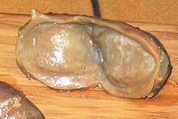

In life the gizzard is a thick walled muscular sack full of rocks the duck uses as a ball mill to grind up everything it eats. They are "extra dark" meat with a more intense flavor than any other muscle in the duck. Poultry processors cut the gizzards into several pieces, clean them and remove the associated plumbing. Generally they are frozen for shipment but may be thawed and packed in trays at your store. The photo shows typical gizzard pieces as sold.
More on Working with Ducks.
|

|
Buying:Find them in ethnic markets serving a Chinese community. In Southern California they're generally peeled, cut and cleaned as shown above, packed in foam plastic trays weighing about 1 pound.French duck gizzards, as shown to the left, are probably available in upscale gourmet outlets. They are sold canned, whole or cut, as confit (seasoned, cooked and packed in fat). Yield:If in the form described above, about as close to 100% as you can get.Prep:If in the form described above, rinse gizzards and remove any fat left by the processor. Just scrape it down to the edge where it's easy to cut off. Gizzard pieces vary quite a bit in size, but they are usually sliced fairly thin before cooking.If you have fresh whole gizzards or in the form shown to the left, you
need to peel off the tough outer membrane before cutting.
|